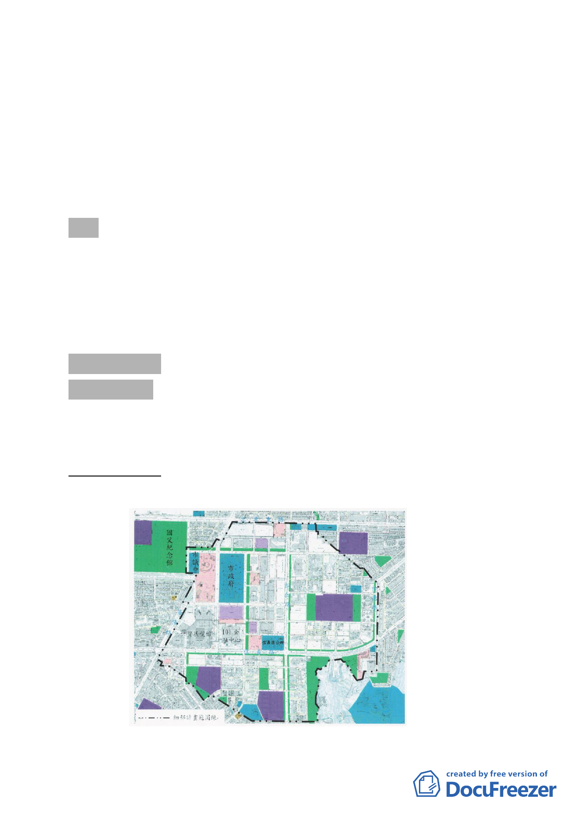

臺北市都市計畫委員會第 597 次委員會議紀錄
時間：中華民國 98 年 7 月 30 日（星期四）下午 2 時
地點：市政大樓 8 樓西南區本會委員會議室
主席：林兼主任委員建元
彙整：陳福隆
出席委員：(詳簽到表)
列席單位人員：(詳簽到表)
壹、宣讀上(596)次委員會議紀錄，除討論事項二「修訂『北投士
林科技園區（不含區段徵收及特定專用區範圍）細部計畫案』
內機 2 機關用地土地使用管制案」，決議第一點最後一句修正
為「由申請單位另依法定程序辦理變更」，其餘無修正事項，
予以確定。
貳、討論事項
討論事項 一
案名：修訂臺北市信義計畫地區建築及土地使用分區管制（增訂
容積移入上限）要點案
案情概要說明：
一、計畫範圍：信義計畫地區
-1-